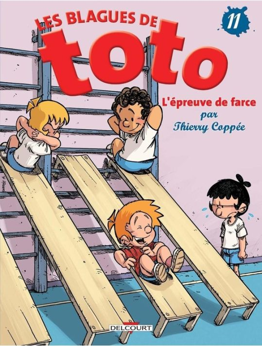
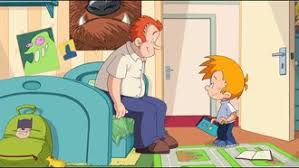

• Synopsis
Toto est un petit garçon âgé de huit ans. Il n’est pas sage du tout et passe son temps à faire des bêtises, à l’école comme à la maison. Par exemple, il n’arrête pas d’embêter sa maîtresse Mademoiselle Jolibois, et il est toujours installé au fond de la classe! En fait, il prend l’école pour un terrain de jeux et aime y retrouver ses copains pour rigoler. Les parents de Toto, Jérôme et Sylvie, sont divorcés ; Toto a donc deux maisons. Ainsi, il peut faire deux fois plus d’âneries. Heureusement, Toto aime juste s’amuser. Il n’est pas méchant, jamais violent. Le dessin animé est dérivé de la bande dessinée de Thierry Coppée qui porte le même nom. Il ne prend pas le même scénario que la BD, mais garde le charme de ses personnages.
• Galeries


• Les blagues de toto
Retrouve une sélection de blagues Toto, rapides à lire et faciles à partager.
Blague 1: Demain est un autre jour
La maîtresse dit à Toto :
« Tu es épicier. J’entre dans ton magasin et je choisis une salade à 1 euro, un kilo de carottes
à 3 euros et trois litres de jus d’oranges à 4,50 euros. Combien je te dois ?
Toto réfléchit un moment et se met dans la peau de l’épicier, puis répond :
– Ne vous en faites pas ma p’tite dame, vous me réglerez votre note demain ! »
Blague 2: « Un fétu de paille s’il vous plaît ! »
La maîtresse demande à la classe de Toto,
« Qui peut me dire pourquoi les trois petits cochons voulaient se faire construire une maison ?
(Histoire)
Lulu, le copain de Toto lève la main et dit,
– Moi je sais ! Ils avaient trop mangé, étaient trop gros et ils ont dû reconstruire leurs
maisons pour y rentrer !
– Mais non, reprend la maîtresse, c’est parce qu’il avaient peur de se faire manger par le loup
! Et toi Toto, tu sais bien que, dans cette histoire racontée, le premier petit cochon a
rencontré un agriculteur et lui a demandé de la paille pour construire sa maison ? Peux-tu me
dire ce que ce monsieur lui a répondu ?
Toto réfléchit un instant et annonce tout fier,
– Il a dit « Oh chouette, un cochon qui parle » ! »
Blague 3: La mémoire qui flanche
La maîtresse de Toto l’interroge sur la dernière leçon de géographie : « Peux-tu me dire quels
sont les pays frontaliers de la France, Toto ?
Toto reste muet, la maîtresse le sermonne,
– Tu n’as toujours pas revu le cours de géographie !
Toto répond :
– Si, mais à force de me creuser la tête, j’ai un trou de mémoire ! »